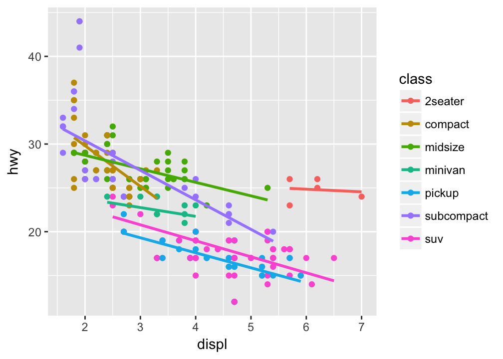
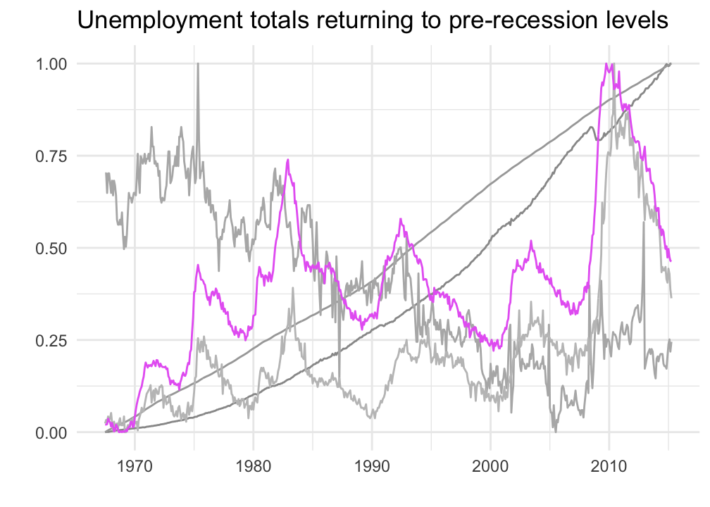

Sometimes you just want to emphasize some aspect of the data in your plot. The ggfocus package provides a simple scale to help focus attention where you want it. The package is an extension of ggplot2 that adds a single scale_colour_focus() call.
library(ggplot2)
library(ggfocus)The following examples demonstrate what you can do with this simple method. As you might expect, this approach works with any type of geom and stat when plots use the color aesthetic, and it works when faceting, too.
p <- ggplot(diamonds, aes(depth, colour = cut)) +
geom_density() +
xlim(55, 70)
p## Warning: Removed 45 rows containing non-finite values (stat_density).p + scale_colour_focus(1)## Warning: Removed 45 rows containing non-finite values (stat_density).p + scale_colour_focus(c(1,5))## Warning: Removed 45 rows containing non-finite values (stat_density).set.seed(4393)
dsmall <- diamonds[sample(nrow(diamonds), 1000), ]
ggplot(dsmall, aes(x, y)) +
geom_density_2d(aes(colour = cut)) +
scale_colour_focus(c(4)) +
facet_wrap(~ cut)p <- ggplot(mpg, aes(displ, hwy, colour = class)) +
geom_point() +
geom_smooth(se = FALSE, method = "lm")
p
p + scale_colour_focus(3)At it’s core, ggfocus blends the hue and grey palettes from scales. This means that all of the arguments you can use with scale_colour_hue and scale_colour_grey will work with this scale. That’s useful for cleaning up the plots by, say, adjusting the background gray scale to exclude darker shades that might be mistaken for emphasis.
ggplot(economics_long, aes(date, value01, colour = variable)) +
geom_line() +
scale_colour_focus(5, start = 0.6, end = 0.8) +
ggtitle("Unemployment totals returning to pre-recession levels") +
labs(y = "", x = "") +
guides(colour = FALSE) +
theme_minimal()